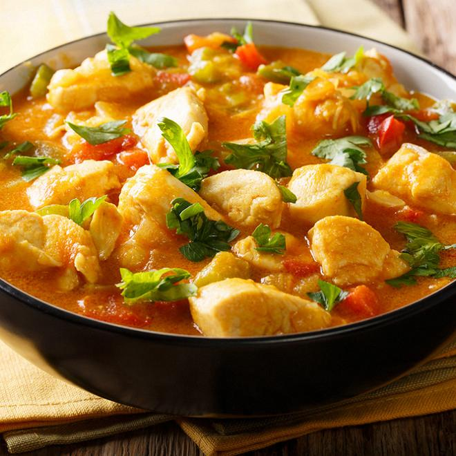

Poulet au curry et lait de coco

Ingrédients (pour 4 personnes)
- 500g de blancs de poulet
- 1 oignon
- 2 gousses d’ail
- 1 cuillère à soupe d’huile d’olive
- 1 cuillère à soupe de pâte de curry (rouge ou jaune)
- 400ml de lait de coco
- 1 cuillère à soupe de sauce soja
- Sel & poivre
- Coriandre fraîche (optionnel)
- Riz basmati en accompagnement
Étapes de préparation
- Émince l’oignon et l’ail. Coupe le poulet en morceaux.
- Fais revenir l’oignon et l’ail dans l’huile d’olive à feu moyen pendant 2-3 minutes.
- Ajoute la pâte de curry et mélange bien pendant 1 minute pour libérer les arômes.
- Ajoute les morceaux de poulet et fais-les dorer de tous les côtés (environ 5 minutes).
- Verse le lait de coco et la sauce soja. Sale et poivre selon ton goût.
- Laisse mijoter à feu doux pendant 15 à 20 minutes, jusqu’à ce que la sauce épaississe légèrement.
- Serre chaud, parsemé de coriandre fraîche, avec du riz basmati.
Valeurs nutritionnelles (par portion)
| Élément |
Quantité |
| Calories |
520 kcal |
| Protéines |
35g |
| Glucides |
15g |
| Lipides |
35g |
| Fibres |
2g |
| Sodium |
480mg |